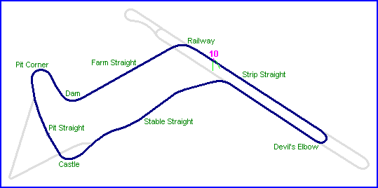
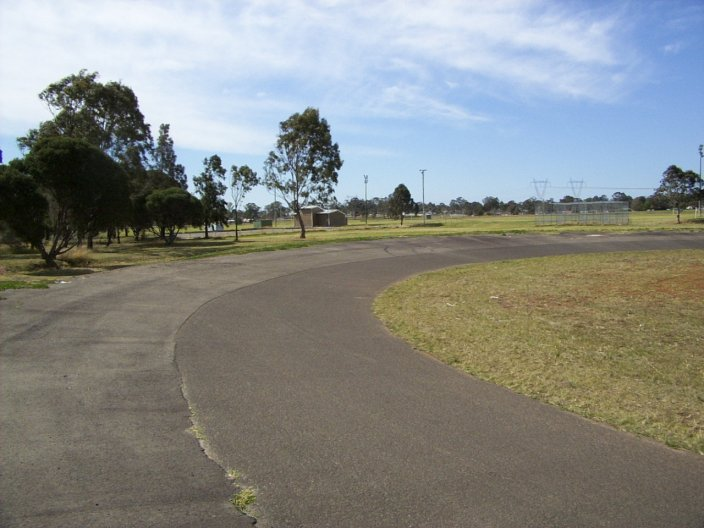
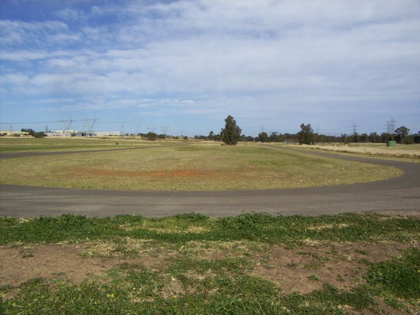

#10 - The circuit would have returned onto the airstrip in approximately this area. Nowadays, this section is the northern most loop on the Whalan Reserve sports training track
|| Contents | Strip Straight | Farm Straight & Railway Corner | Stable Straight | Strip Return Curve || Home ||

Numbers indicate the region where the photographs were taken. Click on direct links
below:
| 10 | 11 | 12 |
#10 - The circuit would have returned onto the airstrip in approximately this area.
Nowadays, this section is the northern most loop on the Whalan Reserve sports training
track

#11 - A closer look at the training track

#12 - The view of the training track loop, looking down towards railway corner
Photographs ©Conrad Zalewski. Reproduced here with kind permission.